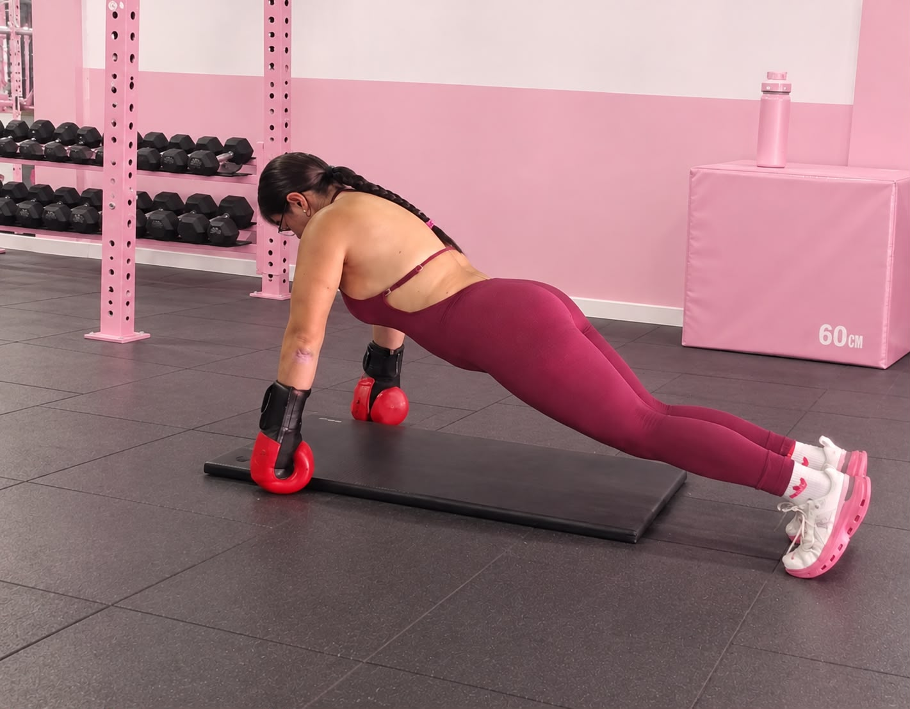

Tu mejor versión comienza contigo
Entrena, aliméntate y evoluciona.
Construye hábitos saludables y disfruta
cada paso de tu transformación.
Construye hábitos saludables y disfruta
cada paso de tu transformación.
Un espacio creado para mujeres que desean sentirse mas fuertes, saludables y seguras de si mismas.

Mi plan de entrenamiento
PEQUEÑOS ESFUERZOS, GRANDES TRANSFORMACIONES.
| DIA | ENTRENAMIENTO | ENFOQUE |
|---|---|---|
| Lunes | Tren inferior | Glúteos y cuádriceps |
| Martes | Tren superior | Espalda, hombros y brazos |
| Miércoles | Cardio y abdomen | Resistencia y zona media |
| Jueves | Tren inferior | Glúteos y femorales |
| Viernes | Tren superior | Pecho, espalda y brazos |
| Sábado | Recuperación activa | Caminata y movilidad |
| Domingo | Descanso | Recuperación muscular |
Alimentacion Saludable
Nutre tu cuerpo y Disfruta el proceso
ENTRENA- ALIMENTATE- EVOLUCIONA
Disfruta cada paso
BIENVENIDA
Transforma tu cuerpo fortalece tu mente y enamorate de tu proceso
MI CAMINO FIT
Tu proceso, tu ritmo, tu transformacion
Bienvenida a MI CAMINO FIT, un espacio creado para mujeres que desean transformar su estio de vida a travez del entrenamient, la alimentacion consiente y la construccion de habitos saludables.
Creemos que cada proceso es unico y que los grandes cambios comienzan con pequeñas deciciones.
Aqui encontraras rutinas de entrenamiento, recetas saludables, herramientas para organizar tus habitos y espacio para registrar tus avances.
No se trata de alcanzar la perfeccion, sino de construir una version de ti misma con la que te sientas fuerte, saludable y feliz.